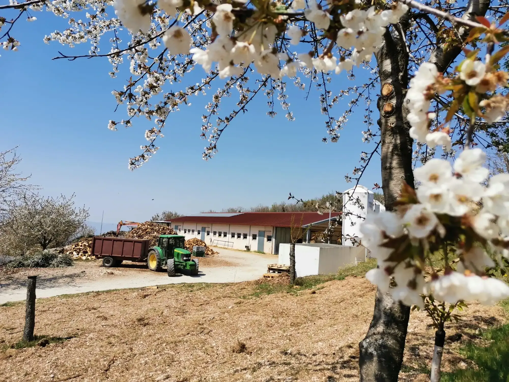
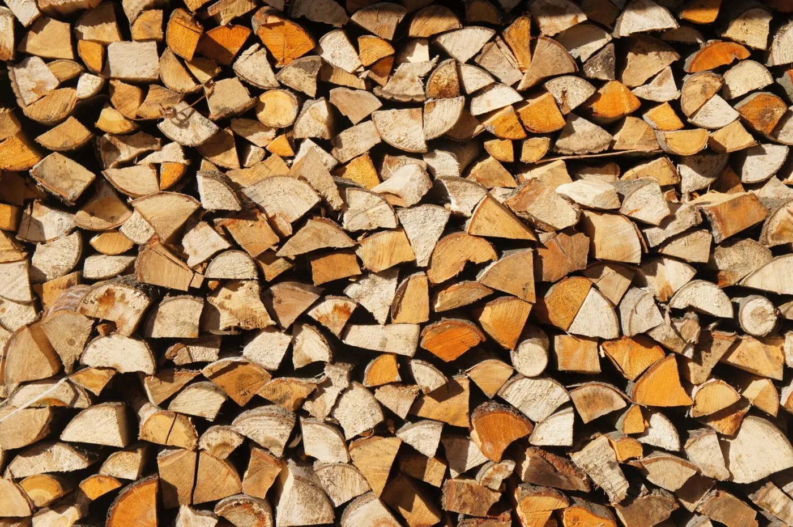

Olio
Olio extra vergine di Moraiolo, raccolto a Trevi: la regina dell’olio d’oliva. Spremuto poche ore dopo la raccolta delle olive nel nostro frantoio. Il meglio dell’Umbria in ogni goccia.
Scopri: olio
Olio di Trevi, Formaggi e Noci di produzione propria in Umbria.
Nel cuore delle pittoresche Coste di Trevi, la nostra azienda si distingue per la sua versatilità nelle attività agricole, abbracciando la coltivazione, l'allevamento e la produzione di olio e formaggi.
Scopri tutti i nostri prodotti artigianali
Olio extra vergine di Moraiolo, raccolto a Trevi: la regina dell’olio d’oliva. Spremuto poche ore dopo la raccolta delle olive nel nostro frantoio. Il meglio dell’Umbria in ogni goccia.
Scopri: olioFormaggi dal sapore incredibile che riflettono il benessere degli animali e la freschezza degli ambienti in cui pascola il nostro gregge. Lavoriamo il latte crudo non pastorizzato nel nostro moderno caseificio.
Scopri: formaggiIl nostro miele millefiori, raccolto sulle pendici del Monte Serano, racchiude tutta la ricchezza della biodiversità umbra in un prodotto naturale dal sapore intenso e autentico.
Scopri: miele

Il nostro Pecorino Umbro rappresenta l’eccellenza della tradizione casearia, con latte fresco non pastorizzato per conservare proprietà nutrizionali.
Le pecore, libere nei prati umbri, conferiscono al formaggio un profumo irresistibile. La produzione artigianale e l’assenza di pastorizzazione donano complessità aromatica e consistenza cremosa.

I nostri 39 ettari di oliveto a Trevi, nella fascia Olivetata Assisi-Spoleto, ospitano principalmente la varietà “Moraiolo” (quasi al 100%), con presenza di “Frantoio” e “Leccino” per un’ottimale impollinazione.
Situati a un’altitudine di 400-600 metri su terreno prevalentemente sabbioso con scheletro, le nostre olive sviluppano un profilo aromatico distintivo.
4,9 su 5 · 15 recensioni su Google
What a great family run frantoio, everyone was calm, kind and accommodating, not mentioning the oil is excellent. I tasted both the new oil unfiltered and the new oil filtered. They both have great nose, grassy with the aroma of artichoke, and the taste is well balanced between the olives, pepperiness, and bitterness. A real find. They also produced Pecorino cheese, not overly salty with a hint of sweetness. You can tell it's from the happy sheep.
Un posto tranquillo e bellissimo
Consiglio vivamente
Magnifica, cucummeru speciale
Bellq
Una esperienza indimenticabile, formaggio ottimo, vi consiglio a tutti questa esperienza
Il TG3 ha nuovamente parlato della nostra azienda! 🐑🍾
Questa volta il protagonista dell'intervista è stato il nostro fantastico Marco! 👨🌾🎉
Siamo entusiasti di vedere le Coste di Trevi ricevere tanta attenzione e riconoscimento. 🌿💚
Un ringraziamento speciale a Marcello per il suo prezioso contributo nel far splendere e conoscere il nostro territorio. 🙏✨
Siamo una famiglia che unisce tre diverse generazioni,
tutte accomunate dalla stessa passione per l'agricoltura.
Questo legame familiare rappresenta il cuore pulsante
della nostra azienda e costituisce il motore che ci spinge
a perseverare nella nostra missione.


TREVI
Nel cuore delle pittoresche Coste di Trevi, la nostra azienda si distingue per la sua versatilità nelle attività agricole, abbracciando la coltivazione, l'allevamento e la produzione di olio e formaggi. Oltre a svolgere il ruolo di produttori, siamo appassionati custodi della nostra campagna, un impegno che si riflette nei nostri eccezionali prodotti.
Siamo una famiglia che unisce tre diverse generazioni, tutte accomunate dalla stessa passione per l'agricoltura. Questo legame familiare rappresenta il cuore pulsante della nostra azienda e costituisce il motore che ci spinge a perseverare nella nostra missione.
PASSIONE
La nostra azienda coltiva con passione 40 ettari di oliveti, interamente dedicati alla varietà Moraiolo, simbolo dell’eccellenza olearia di Trevi. Grazie alla gestione diretta del nostro frantoio, garantiamo che le olive vengano frante entro poche ore dalla raccolta, preservando al massimo freschezza e qualità.
Seguiamo ogni fase del processo con cura e competenza, rispettando rigorosi standard di produzione. Il risultato è un olio extravergine d'oliva dal carattere unico, capace di trasformare ogni piatto in un'esperienza gastronomica straordinaria.


FORMAGGIO
Il nostro formaggio di pecora è il frutto di un processo artigianale che ha inizio direttamente nella nostra moderna stalla, equipaggiata con le tecnologie più avanzate. Le nostre pecore sono della specie Lacaune, nota per la sua eccellente produzione lattiera.
Seguiamo personalmente l'intero processo, garantendo così la massima freschezza e tracciabilità in ogni singolo passo della produzione. Questo ci consente di evitare la pastorizzazione del latte, preservando l'autentico e tradizionale gusto dei nostri formaggi.
Siamo una famiglia che unisce tre diverse generazioni, tutte accomunate dalla stessa passione per l'agricoltura. Questo legame familiare rappresenta il cuore pulsante della nostra azienda e costituisce il motore che ci spinge a perseverare nella nostra missione.



Offriamo legno di carpine e quercia, noto per l’alto potere calorifico,
ideale per stufe e camini.
Garantiamo un calore costante e duraturo, con spedizioni gratuite nel comune di Trevi e zone limitrofe. Ordine minimo di 10 quintali.
Contattaci oggi per un inverno caldo e confortevole!
Le nostre noci sono coltivate con rigore senza l’impiego di sostanze chimiche. Questa pratica preserva la freschezza e la concentrazione di nutrienti, come acidi grassi omega-3 e antiossidanti.
Gli omega-3 favoriscono la salute cardiaca, mentre gli antiossidanti supportano il sistema immunitario. Scegliendo le nostre noci, investite in un’alimentazione equilibrata e salutare.


Tutti i nostri prodotti sono disponibili all'interno del nostro sito.
Contattaci per maggiori informazioni.
© Azienda Medei · Loc. le Case N.5, 06039 Coste di Trevi (PG)
Scrivici su WhatsApp